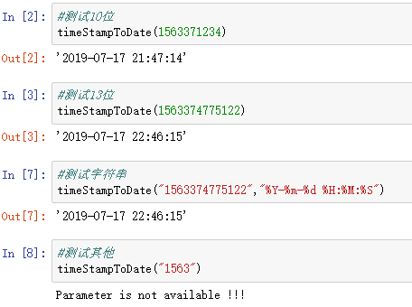

1 def timeStampToDate(dateUnixString,format_string="%Y-%m-%d %H:%M:%S"):
2 '''
3 时间戳转换时间字符串，时间戳可以是10位或者13位的
4 '''
5 import time,datetime
6 length = len(str(dateUnixString))
7 if length == 10:
8 try:
9 date_String = datetime.datetime.fromtimestamp(dateUnixString).strftime(format_string)
10 return date_String
11 except Exception as e:
12 print(e)
13 elif length == 13:
14 try:
15 dateUnixString = int(dateUnixString)/1000
16 date_String = datetime.datetime.fromtimestamp(dateUnixString).strftime(format_string)
17 return date_String
18 except Exception as e:
19 print(e)
20 else:print("Parameter is not available !!!") 测试：
